STRUCTURAL IDEALISATION
In the work done so far, the aircraft structural components analysed have been relatively simple. However an aircraft wing (for example) can be made up of many cell compartments. Each section of the wing would be covered by a thin skin, and the skins would be reinforced by many stringers of Z, C or T section. The analysis of such a structure would be extremely complex and time consuming. In order to simplify this, structural idealisation should be carried out.
Assumptions
1) The longitudinal stiffeners and spar flanges carry only axial stresses
2) The web, skin and spars webs carry only shear stresses
3) The axial stress is constant over the cross section of each longitudinal stiffener
4) The shearing stress is uniform through the thickness of the webs
5) Transverse frames and ribs are rigid within their own planes and have no rigidity normal to their plane.
In idealising a structural component by following these five points the new simpler structure looks something like this:
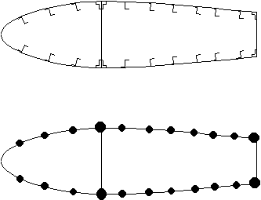 |
Figure 54: Original and Idealised wing sections |
For which:
- The stiffeners are represented by circles called booms, which have a concentrated mass in the plane of the skin.
- The direct stresses are calculated at the centroid of these booms and are assumed to have constant stress through their cross-section.
- Shear stresses are assumed uniform through the thickness of the skins and webs.
- The direct stress carrying capability of skin is represented as an addition to existing booms or as additional separate booms.
Because the skin can carry some direct load, usually tensile (although some can be carried in compression but this is determined by the buckling load of the skin), the Direct Stress Carrying Thickness of the skin is defined as:
tD = Actual skin thickness t, if skin resists totally direct load
tD = Percentage of t, if partially resists applied load
tD = 0 if skin only able to resist shear load
We now need to look at how these idealisation techniques can be applied:
Look at a typical stiffened panel:
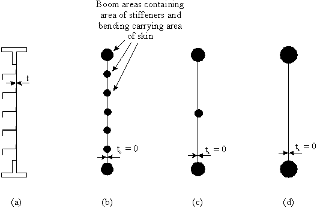 |
Figure 55: a) Actual panel |
To idealise a structure you can:
1) Replace the spar web by replacing its area to the major booms
2) Reduce the number of stiffeners or booms by combining the stiffener mass with that of the skin into one boom
If you wish, this could be simplified even further by:
1) Increasing the cross-sectional area of just two of the booms with the direct carrying capacity of the skin and stiffeners.
REMEMBER : When idealising a structure, the elastic characteristics of the idealised structure must be the same as for the original structure.
IDEALISED SHEET TO SUPPORT TENSILE LOAD P
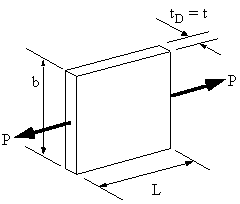 |
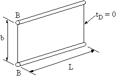 |
|
Figure 56: Actual sheet to be Idealised. |
Figure 57: Idealised structure. |
What needs to be done is to idealise the structure of Figure 56 into that of Figure 57. In order to do this two things must be considered, force (stress) equilibrium and compatibility (displacement)
In the real structure the direct stress is determined using:
$$ σ_z = P/{b t_D} $$and its elongation is given by :
$$ δ = {FL}/{EA} = {PL}/{Ebt_D} $$In the idealised structure, however, the direct stress is given by:
$$ σ_z = P/{2B} \text" (in the booms)" $$And its elongation is given by:
$$ δ = {PL}/{E2B} $$Since the approximation and the ideal should give the same elongation, then we can define the relationship:
$$ B = {bt_D}/2 $$If you look at the stress in the booms they are the same as those of the original structure.
IDEALISED SHEET TO SUPPORT BENDING MOMENT M
The bending moment is applied at the end of the plate as follows:
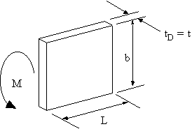 |
Figure 58: Actual sheet to be idealised with applied bending moment M. |
The stress in this sheet is given by :
$$ σ_z = {My}/I = {6M}/{b^2 t_D} $$The second moment of area for the idealised booms is (using parallel axis theorem) is given by:
$$ I = 2B( b^2/4 ) = {Bb^2}/2 $$and its stress is given by :
$$ σ_z = M/{Bb} \text" (booms) " $$Since approximation and ideal should give the same maximum stresses then:
$$ B = {bt_D}/6 $$As can be seen by this equation, a different idealised boom area equation is required for a different loading condition.
IDEALISED SHEET TO SUPPORT DIRECT LOAD AND BENDING MOMENT
The stress distribution for a combined loading case with a direct load and a bending moment looks like Figure 59.
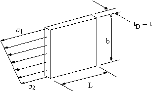 |
Figure 59: Actual sheet supporting direct load and bending moment. |
In the idealised structure, the maximum and minimum stresses need to be carried by the booms as actual direct stresses, Figure 60.
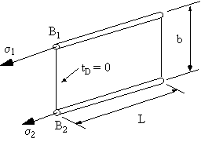 |
Figure 60: Idealised sheet supporting maximum stresses in booms. |
Equating the direct loads along the z-axis gives that:
$$ B_1 σ_1 + B_2 σ_2 = 1/2 b t_D ( σ_1 + σ_2 ) $$If the neutral axis in the idealised structure is in the same position as in the original sheet, the bending moment carried by the idealised structure must be the same as that carried by the real structure.
Equating moments about neutral plane gives the following:
$$ σ_1 B_1 b/2 - σ_2 B_2 b/2 = b t_d {(σ_1 - σ_2)}/2 .(b/6) = {b^2 t_D}/{12}( σ_1 - σ_2 ) $$multiplying by 2 gives:
$$ σ_1 B_1 - σ_2 B_2 = {b t_D}/{6}( σ_1 - σ_2 ) $$Adding these equations and simplifying, gives:
$$ B_1 = {b t_D}/6 ( 2 + σ_2/σ_1 ) $$ $$ B_2 = {b t_D}/6 ( 2 + σ_1/σ_2 ) $$By calculating the bending stresses, the structure can then be idealised.
WARNING :There is a problem with the above equations. It has to do with idealising sections of skin very close to the neutral axis of the cross section, see Figure 61.
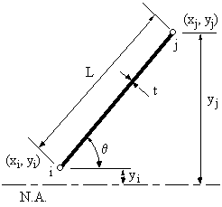 |
Figure 61: Skin segment very close to Neutral Axis to be idealised into booms i & j |
Equations for B1 and B2 can be generalised in the form of :
$$ B_i = {Lt}/6 ( 2 + σ_j/σ_i) $$However if σi << σj or σi = 0, Bi becomes extremely large, giving an incorrect approximation for the boom area.
To correct this problem, use the following correction. However be aware that this is just a simplified correction method and that large errors can obtained if proper care is not taken to observe how these corrections alter the solution.
IDEALISED SHEET TO SUPPORT DIRECT COMPRESSIVE LOAD
When supporting a compressive load, the metal sheet is usually critical in buckling. Because of this, only a small fraction of its width 'b' is effective in compression. Experimental research has led to the derivation of the following equations for the effective area of skin in compression.
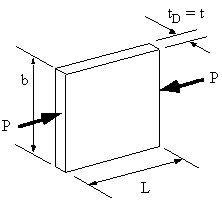 |
||
Figure 62: Sheet to be idealised in compression. |
Figure 63: Idealised sheet. |
Area of boom:
$$ B = Ct $$where 'C' is the effective width of metal in compression, given by:
$$ C = {π t}/ {√{12 (1- v^2)}} √{ E/{σ_{yield}}} = 20 t $$Note : Although the idealisation given by the above equations for a metal sheet in compression is valid, it is sometimes better to idealise the structure using the equations derived for the other three load cases. When the stresses on the metal skin are known we can then use critical buckling stresses for thin metal sheets to determine if they will be effective in compression.
Example:
Part of a wing section is in the form of a two-cell box shown. All the vertical spar webs are connected to the skins through spar caps, all with cross-sectional areas of 300 mm2. Idealise the section into direct stress carrying booms and shear stress only carrying skin when the wing is subjected to an applied bending moment Mx = -150 kNm. Position the booms at the spar/skin junctions.
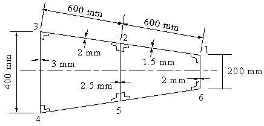 |
Figure 64: Wing section to be idealised,subject to a bending moment Mx = -150 KNm. |
Since all skin panels experience both a tensile/compressive load together with a bending moment, then appropriate B.M. approximations are the ones to use when idealising this section.
Now, from symmetry : B1 = B6, B2 = B5 and B3 = B4, saving us some calculations. This would not be the case if the wing wasn't symmetrical.
Lets start with determining the area of boom 1. This boom must have first of all the area of spar cap 1, which is 300 mm2, together with the area contributions of the two adjacent skins.
Therefore:
$$ B_1 = 300 + {1.5 × 600}/6 ( 2 + σ_2/σ_1 ) + {2 × 200}/6 ( 2 + σ_6/σ_1 ) $$Since the equation for stress for a beam with symmetrical cross section is :
$$ σ = {M↖{-}_x}/{I_{xx}} + {M↖{-}_y}/{I_{yy}} $$Then by substituting into this equation for the different stresses, their ratios simplifies to just the ratios of their vertical distances.
Which gives:>/p> $$ B_1 = 300 + {1.5 × 600}/6 ( 2 + {150}/{100}) + {2 × 200}/6 ( 2 - 1 ) $$
So B1 = B6 = 891.67 mm2
For boom 2 we have to consider the contribution of the two spar caps, and the three adjacent skins. Giving :
$$ B_2 = 2 × 300 + {2 × 600}/6 ( 2 + σ_3/σ_2) + {2.5 × 300}/6 ( 2 - σ_5/σ_2) + {1.5 × 600}/6 (2 + σ_1/σ_2 ) $$When substituting for the bending moment equation it becomes:
$$ B_2 = 2 × 300 + {2 × 600}/6 ( 2 + {200}/{150}) + {2.5 × 300}/6 ( 2 - 1) + {1.5 × 600}/6 (2 + {100}/{150} ) $$So B2 = B5 = 1791.67 mm2
And for boom 3 we only have one spar cap and two adjacent skins:
$$ B_3 = 300 + {2 × 600}/6 ( 2 + σ_2/σ_3) + {3 × 400}/6 ( 2 - σ_4/σ_3)$$When substituting for the bending moment equation it becomes:
$$ B_3 = 2 × 300 + {2 × 600}/6 ( 2 + {150}/{200}) + {3 × 400}/6 ( 2 - 1) $$giving that B3 = B4 = 1050 mm2
So the idealised wing now looks like this:
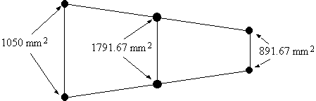 |
Figure 65: Final idealised wing with boom areas marked. |
The above method explains how to calculate the boom areas if carried out by hand. The next section will carry out the same example but using table format, specifically using a spreadsheet
.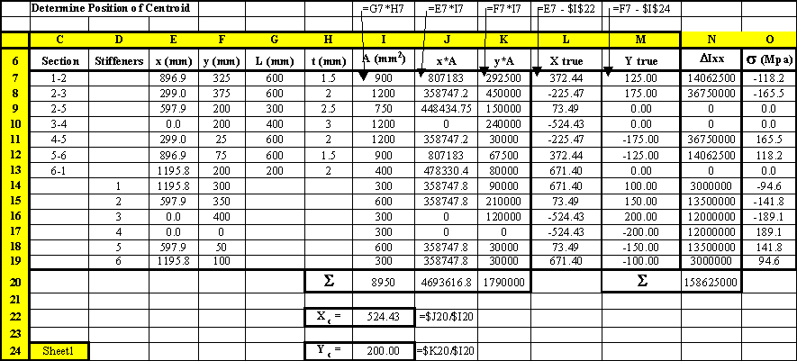 |
Figure 66: Spread Sheet where the sectional properties and stresses of the real structure are calculated. |
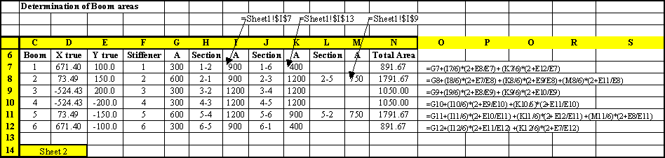 |
Figure 67: Spread Sheet where the boom areas are calculated based on the stresses calculated in the sheet of Figure 66. |
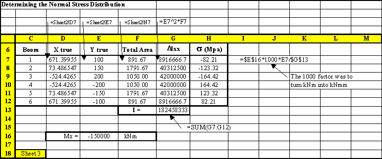 |
Figure 68: Spread Sheet where the sectional properties and bending stresses of the idealised structure are calculated. |
Example :
The singly symmetrical fuselage cross-section is subjected to a bending moment Mx = 100 kNm. If all direct stresses are carried by the booms, determine the average direct stress in each boom.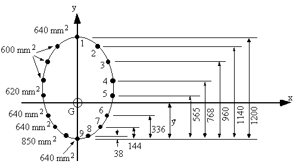 |
Figure 69: Idealised fuselage cross section. |
Because the section is symmetrical about the y-axis (Ix,y = 0), and My = 0, the effective bending moment equations reduces to:
$$ σ_z = M_x/I_{xx} y $$ a) Determine location of centroid $$ y↖{-} = {1200 × 640 + 2 ×1140×600+ 2×768×600 + 2 ×565× 620 + 2 × 336 ×640 + 2 × 144×640 + 2 ×38×850 }/{640×6 + 600×6 +620×2 +850×2 } $$$$ y↖{-} = 538.5 \text" mm" $$
b) Determine sectional properties and stresses in booms
Now that we have the position of the neutral axis, the best way to determine the stresses in each boom is by using a table
| Boom | y (mm) | B (mm2) | ΔIxx = By2 (mm4) | σz (MPa) |
|---|---|---|---|---|
| 1 | 661.5 | 640 | 2.8005e+08 | 35.67 |
| 2 | 601.5 | 600 | 2.1708e+08 | 32.43 |
| 3 | 421.5 | 600 | 1.0660e+08 | 22.73 |
| 4 | 229.5 | 600 | 3.1602e+07 | 12.37 |
| 5 | 26.5 | 620 | 4.3540e+05 | 1.43 |
| 6 | -202.5 | 640 | 2.6244e+07 | -10.92 |
| 7 | -394.5 | 640 | 9.9603e+07 | -21.27 |
| 8 | -500.5 | 850 | 2.1293e+08 | -26.99 |
| 9 | -538.5 | 640 | 1.8559e+08 | -29.04 |
| Ixx = 1.8546e+09 | ||||
Note: Because of symmetry, this table doesn't contain values for the booms on the left hand side of the y-axis. However when calculating the second moment of area Ixx, the values ΔIxx for booms 2 - 8 were multiplied by 2 when doing the summation.
SHEAR OF OPEN SECTION BEAMS
The equation for shear flow for an open beam section was found to be:
$$ q_s = - {S↖{-}_y}/{I_{xx}} ∫_0^s ty.ds - {S↖{-}_x}/{I_{yy}} ∫_0^s tx.ds $$From its derivation, the value of 't' was the direct stress carrying thickness 'tD' of the skin. Such that it could either be equal to : tD = t, if the skin was fully effective in carrying direct stress, or tD = 0, if skin was assumed to carry only shear stresses.
So:
$$ q_s = - {S↖{-}_y}/{I_{xx}} ∫_0^s t_D y.ds - {S↖{-}_x}/{I_{yy}} ∫_0^s t_D x.ds $$So that if we are idealising the beam's cross section, based on our idealisation technique, the value of 'tD' may or may not be equal to zero.
This equation, however does not consider the effect of the idealised booms to the overall shear flow. To account for this, we need to consider the equilibrium of one such boom.
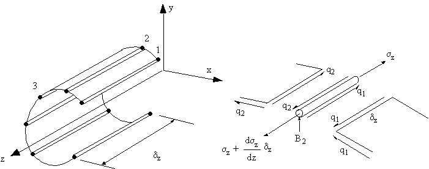 |
Figure 70: Shear loaded open beam with booms, and equilibrium of ith boom. |
Summing the forces along the length of the elemental length of the boom gives:
$$ Σ F_z = ( σ_z + {∂ σ_z}/{∂z}. δ_z )B_2 - σ_z B_2 + q_2 δ_z - q_1 δ_z = 0 $$this equation simplifies to :
$$ q_2 - q_1 = - {∂ σ_z}/{∂z} B_2 $$but since the direct stress is given as follows:
$$ σ_z = {M↖{-}_x}/{I_{xx}} y + {M↖{-}_y}/{I_{yy}} x $$then substituting for it gives:
$$ Δq_{1-2} = q_2 - q_1 = - {S↖{-}_y}/{I_{xx}} B_2 y_2 - {S↖{-}_x}/{I_{yy}} B_2 x_2 $$Given the change in shear flow induced in the skin by the presence of a boom. If several booms were present, their presence becomes an additive one, such that for a beam with 'n' booms, the equation becomes:
$$ q_s = - {S↖{-}_y}/{I{xx}}( ∫_0^s t_d y .ds + Σ_{i=1}^N B_i y_i ) - {S↖{-}_x}/{I{yy}}( ∫_0^s t_d x .ds + Σ_{i=1}^N B_i x_i ) $$But because in an idealised structure the skin only carries the shear stresses, then equation can be simplified to have only the summation terms. To give:
$$ q_s = - {S↖{-}_y}/{I{xx}} Σ_{i=1}^N B_i y_i - {S↖{-}_x}/{I{yy}} Σ_{i=1}^N B_i x_i $$A simpler way of thinking of this equation is by looking at the shear flow in a skin segment i due to the shear flow in skin segment i-1 and the change of shear flow due to the boom k separating these two skin segments, Figure 71.
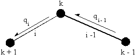 |
Figure 71: Sketch of skin segments i and i-1 and boom k to show how the shear flow is determined. |
In general terms, the change in shear flow between any two skin elements (i and i-1) due to the area of boom k of coordinates xk and yk about the structures' centroid is:
$$ Δq_k = - {S↖{-}_y}/{I_{xx}}B_k y_k - {S↖{-}_x}/{I_{yy}}B_k x_k $$The shear flow in skin segment i is then a function of the shear flow in the previous skin segment (i - 1) and the change in shear flow due to boom k ( Δqk), is :
$$ q_i = q_{i-1} + Δ q_k $$Note: Because of the idealisation process, the shear flow in any skin section between any two booms always has a constant value.
Example :
Calculate the shear flow in the following channel section. The skin is only effective in shear (tD=0), area of all booms 1 & 4 = 250 mm2 , areas of booms 2 & 3 = 350 mm2.
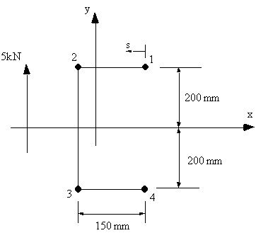 |
Figure 72: Open channel with 5 kN force applied through shear centre. |
Because the structure is symmetrical Ixy = 0 and as we are only applying a vertical load, the equation becomes:
$$ q_s = - S↖{-}_y/{I_{xx}} Σ_{i=1}^N B_i y_i $$The second moment of area Ixx is
| Ixx = 48 × 106 mm4 |
On the RHS of boom 1, qs = 0, so the change in shear flow due to boom 1 is:
| Δq1 = q12 = -5.208 N/mm |
This shear flow is constant until boom 2, where:
| q23 = q12 + Δq2 = -12.5 N/mm |
which is constant until boom 3, where:
| q34 = q23 + Δq3 = -5.208 N/mm |
and you can see that after boom 4, q = 0.
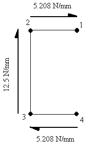 |
Figure 73: Shear flow distribution around channel of example 7. |
And when this problem is done using a spread sheet program, the solution would look like this:
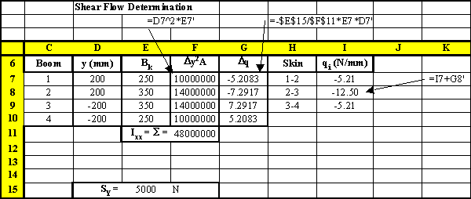 |
Figure 74: Excel sheet indicating how this problem can be solved |
SHEAR OF CLOSED SECTION BEAMS
The derivation of the equation to determine this shear flow is identical as the analysis for open beam sections, making the equation look like this:
$$q_s = q_{s0} - {S↖{-}_y}/{I_{xx}} ( ∫_0^s t_d y.ds + Σ_{i=1}^N B_i y_i ) - {S↖{-}_x/{I_{yy}} ( ∫_0^s t_d x.ds + Σ_{i=1}^N B_i x_i ) $$Since the structure has been idealised, the equation is simplified to:
$$ q_{si} = q_{s0} + q_{bi} $$where:
qbi is the open beam shear flow of skin segment i, and which can be calculated either using previous q_s equations.
qs0 is the residual shear flow due to making the closed beam into an open beam section. It can be calculated using equations for shear flow in closed tubes (see previous section) depending if we know the location of the applied load or if we are trying to determine the shear centre.
Example :
Determine shear flow in the following wing structure with an applied vertical load in the plane of booms 3 and 6. This structure has been idealised into direct stress carrying booms and shear only stress skin (ie tD = 0). Boom areas are: B1= B8 = 200 mm2, B2 = B7 = 300 mm2, B3 = B6 = 400 mm2, B4 = B5 = 150 mm2.
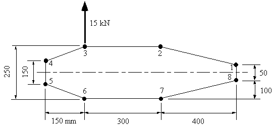 |
Figure 75: Closed wing section with applied shear force between booms 3 & 6 |
Because the section is symmetrical, Ixy = 0. Skin carries only shear load, tD = 0 so use equation for Effect width as shown previously. Only a vertical load is applied, Sx=0. Reducing the equation to:
$$ q_s = q_{s0} - {S↖{-}_y}/{I_{xx}} Σ_{i=1}^N B_i y_i $$where:
Sy = 15 kN,
Ixx = 2x(200x252 + 300x1252 + 400x1252 + 150x752) = 23.813x106 mm4
Substituting this into the above equation gives:
$$ q_s = - 6.2991 × 10^{-4} Σ_{i=1}^N B_i y_i + q_{S0} = q_b + q_{s0} $$Where qb is the shear flow for an open section. Cutting the beam between sections 2 and 3 and doing the analysis in a counter clockwise sense we get:
$$ q_{b2-3} = 0 $$ $$ q_{b3-4} = -6.299 × 10^{-4} (400 × 125) = -31.5 \text" N/mm" $$ $$ q_{b4-5} = -31.5 - 6.299 × 10^{-4} (150 × 75) = -38.59 \text" N/mm" $$ $$ q_{b5-6} = -38.59 - 6.299 × 10^{-4} (150 × (-75) ) = -31.5 \text" N/mm" $$ $$ q_{b6-7} = -31.5 - 6.299 × 10^{-4} (150 × (-125) ) = 0 \text" N/mm" $$ $$ q_{b7-8} = - 6.299 × 10^{-4} (300 × (-125) ) = 23.61 \text" N/mm" $$ $$ q_{b8-1} = 23.61 - 6.299 × 10^{-4} (200 × (-25) ) = 26.77 \text" N/mm" $$ $$ q_{b1-2} = 26.77 - 6.299 × 10^{-4} (200 × 25 ) = 23.62 \text" N/mm" $$It is now necessary to determine qs0. This can be done by using same method as in shear flow for closed tubes, because we know the position of the applied force. Or we could take moments anywhere about the line of action of the applied force, both these statements mean the same thing.
Taking moments about point 3, gives:
0 = (q4-5×150×150 + q5-6×158.11×237.17 + q6-7×300×250 + q7-8×412.31×315.3 + q8-1×50×700 + q1-2×412.31×72.76) + 2×165,000qs0
giving that qs0 = -8.08 N/mm
From equation above we have that qs = qb + qs0, so:qs1-2 = 23.62 - 8.08 = 15.54 N/mm
qs2-3 = 0 - 8.08 = -8.08 N/mm
qs3-4 = -31.5 - 8.08 = - 39.58 N/mm
qs4-5 = -38.59 - 8.08 = - 46.67 N/mm
qs5-6 = -31.5 - 8.08 = - 39.58 N/mm
qs6-7 = 0 - 8.08 = - 8.08 N/mm
qs7-8 = 23.62 - 8.08 = 15.54 N/mm
qs8-1 = 26.67 - 8.08 = 18.59 N/mm
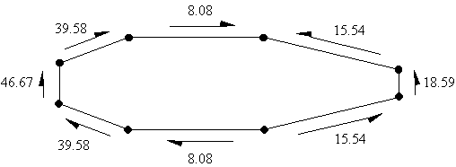 |
Figure 76: Shear flow distribution of loaded closed wing section |
When this problem is solved using a spread sheet program, the solution would look as follows:
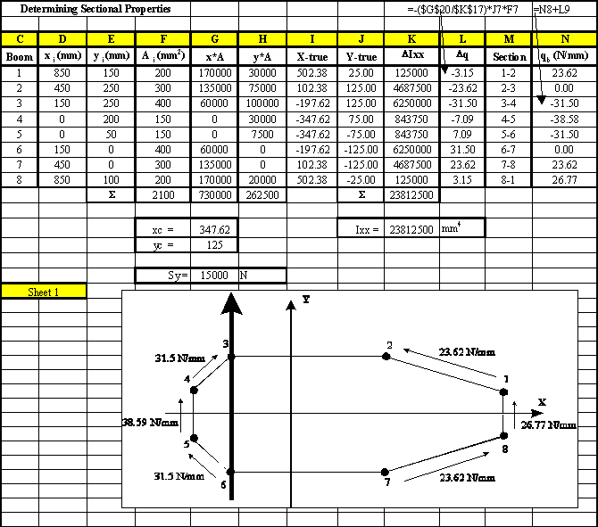 |
Figure 77: Spread sheet where the open beam shear flows are calculated |
In order to calculate the value of qs0, moments were taken about the centroid for this spread sheet example.
However, in order for the spread sheet to calculate the perpendicular distance between a point in space and a segment of skin the following equation was used, with reference to Figure 78.
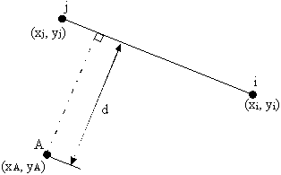 |
Figure 78: Perpendicular distance d between a point A and skin segment i-j |
where:
Δy = yj - yi , Δx = xj - xi , A = -Δy , B = -Δx , C = xiΔy - yiΔx
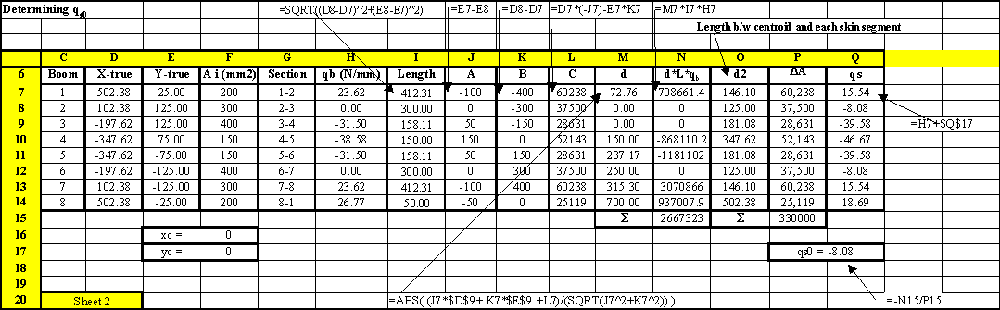 |
Figure 79: Excel sheet showing the calculation of qs0 and the final shear flow distribution |
Note:Column P gives the twice the area between the centroid and each skin segment, and the value of cell P15 is equal to 2A, twice the enclosed area of the wing section